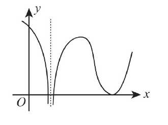

导数与极值概念辨析。注意：单调递减加递增确实能推极小值；但反过来极值点两侧导数不一定单调（可能有无穷次振荡）。代入经典振荡函数排除假命题。
-
(5) 设函数 $f(x)$ 在区间 $[-1,1]$ 上有定义，则
高等数学
一元函数单调性、极值、最值与零点个数
导数与极值概念辨析。注意：单调递减加递增确实能推极小值；但反过来极值点两侧导数不一定单调（可能有无穷次振荡）。代入经典振荡函数排除假命题。
(5) 设函数 $f(x)$ 在区间 $[-1,1]$ 上有定义，则
变上限积分极值与拐点。对 $f(x)$ 和 $g(x)$ 求导，看到因式里有 $\sin t$ 和 $\sin^2 x$，通过导数变号判断极值点，二阶导变号判断拐点。
(2) 已知函数 $f\left( x \right) = \int_{0}^{x} e^{t^{2}} \sin t \mathrm{~d} t$，$g\left( x \right) = \int_{0}^{x} e^{t^{2}} \sin t \mathrm{~d} t \cdot \sin^{2} x$，则
(7) 设函数 $\displaystyle f(x)=(x^2+a)e^x,$ 若 $f(x)$ 没有极值点，但曲线 $y=f(x)$ 有拐点，则 $a$ 的取值范围是（ ）。
(3) 设 $f\left( x \right)$ 在 $x = x_{0}$ 处有二阶导数，则 $\left( \ \right)$
(4) 设函数 $f(x)=ax-b\ln x$，其中 $a>0$。若 $f(x)$ 有两个零点，则 $\dfrac{b}{a}$ 的取值范围是
已知 $\displaystyle f(x)= \begin{cases} x^{2x}, & x>0,\\ xe^x+1, & x\le 0, \end{cases}$ 求 $f(x)$ 的极值。
已知函数 $y(x)$ 由方程 $\displaystyle x^3+y^3-3x+3y-2=0$ 确定，求 $y(x)$ 的极值。
(4) 设函数 $f(x)$ 在 $(-\infty,+\infty)$ 内连续，其导函数的图形如图所示，则：

含绝对值的变限积分大题。被积函数含 $|t^2-x^2|$，在积分区间 $[0,1]$ 内以 $t=x$ 为分界点拆成两段去掉绝对值，求导解驻点求最小值。
设函数 $\displaystyle f(x)=\int_0^1|t^2-x^2|\,\mathrm{d}t\qquad (x>0),$ 求 $f'(x)$ 并求 $f(x)$ 的最小值。
变限积分零点个数大题。两边求导得到 $f'(x)$，解出导数驻点并判断单调区间；结合端点极限 $x\to 0^+$ 和 $x\to +\infty$ 的函数值正负卡出零点个数。
已知函数 $f\left(x\right)=\int_{x}^{1}\sqrt{1+t^{2}}\mathrm{~d}t+\int_{1}^{x^{2}}\sqrt{1+t}\mathrm{~d}t$，求 $f\left(x\right)$ 零点的个数。
(3) 函数 $f\left(x\right)=\ln\left|\left(x-1\right)\left(x-2\right)\left(x-3\right)\right|$ 的驻点个数为（ ）
参数方程极值与拐点大题。先算一阶导 $\frac{dy}{dx}$ 求驻点定极值；再用参数方程二阶导公式求出 $\frac{d^2y}{dx^2}$，令二阶导为 0 找出拐点坐标。
设函数 $y=y\left(x\right)$ 由参数方程 $\left\{\begin{matrix}x=\frac{1}{3}t^{3}+t+\frac{1}{3} \\ y=\frac{1}{3}t^{3}-t+\frac{1}{3}\end{matrix}\right.$ 确定，求 $y=y\left(x\right)$ 的极值和曲线 $y=y\left(x\right)$ 的凹凸区间及拐点。
求函数 $f \left(x\right) = \int_{1}^{x^{2}}\left(x^{2} - t\right)e^{-t^{2}} \mathrm{~d}t$ 的单调区间与极值.